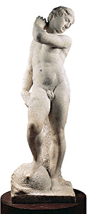

|
|
|
The Medici, Michelangelo, and the Art of Late Renaissance Florence provides a detailed survey of the art and culture of 16th-century Florence, the crucible of the Italian Renaissance. Between 1537 and 1631, the first four Medici grand dukes—Cosimo I; his sons, Francesco I and Ferdinando I; and his grandson, Cosimo II—presided over a spectacular flowering of the arts and sciences, exemplified by the pioneering achievements and dominant legacy of Michelangelo. Celebrated during his lifetime for his extraordinary talent as a sculptor, architect, painter, draftsman, and poet, Michelangelo inspired subsequent Florentine artists and attracted the city’s most powerful patrons—notably the Medici grand dukes. Their extensive and enlightened patronage allowed art in all media to flourish. In addition to commissioning portraits and decorative objects for private and public display, the Medici family ordered the reconstruction or renovation of numerous civic buildings and private residences and established several major institutions for artistic production and instruction, including Europe’s first artists’ academy. Cosimo I de’ Medici In 1537 the young Cosimo de’ Medici (1519–1574) was plucked from relative obscurity in the Tuscan countryside to lead Florence after the assassination of his cousin Duke Alessandro de’ Medici (1511?–1537). Surprising the Florentine aristocrats who put him in power, who believed they could easily manipulate the 17-year-old, Cosimo declined to marry into one of their families. Instead, he tied himself firmly to the Holy Roman Emperor, Charles V (1500–1558) by marrying the Spanish princess Eleonora di Toledo (1522–1562), daughter of the emperor’s viceroy in Naples. In so doing, he elevated himself to absolute ruler of Florence. By 1569, when Cosimo convinced Pope Pius V (1504–1572) to bestow on him the title of Grand Duke of Tuscany, he had expanded his totalitarian rule throughout the Tuscan territories, sometimes violently seizing control of neighboring cities. Cosimo’s control of Florence was equally ruthless, but he eventually won the grudging support of the Florentine citizenry––not simply for the economic and political expansion he had garnered for the city but for its greater military security. Many also found much to admire in Cosimo’s wide-ranging intellect, including a deeply rooted interest in art and literature and a keen fascination with botany, chemistry, and zoology. With an innate instinct for public relations, Cosimo engaged his court painters and the new artists’ academy, which he helped to found, in the development of a repertory of images that communicated Medici power and dynastic rule. The painters Pontormo (1494–1556) and, to a greater degree, Agnolo Bronzino (1503–1572) fashioned a court portrait style for the Medici, characterized by courtly grace and opulence and often bristling with complex allegories relating to power and military might. Bronzino and his workshop produced myriad portraits of Cosimo, Eleonora, and their children; of the grand duke’s distinguished ancestors; and of members of the court. A religious subject by Bronzino commissioned by a member of the elite Medici circle, Holy Family with Saint John the Baptist, is one of the painter’s most celebrated works. Its references to specific examples of ancient Greek and Roman sculpture—which the artist had seen during a recent trip to Rome—were surely recognized and appreciated by the learned patron and his colleagues. Pontormo, primarily a painter of religious subjects, was awarded numerous important commissions by Cosimo, including the decoration of the choir of the Medici church of San Lorenzo (1546/51). Now lost, the imaginative and unusual San Lorenzo frescoes are known primarily from Pontormo’s surviving preparatory drawings, on view in the exhibition. These studies give some sense of the peculiar, personal nature of the lost paintings. Gardens and fountain sculpture were among the glories of Medici patronage. Cosimo appointed Niccolò Tribolo to redesign the gardens of the Medici villa at Castello (outside of Florence) and the Boboli Gardens (behind the Palazzo Pitti) with fountains, grottoes, water tricks, and areas of trimmed and wild plantings. Giambologna’s bronze figure of a woman wringing water from her hair, variously identified as either Florence or Venus, once graced a fountain in the garden of the villa at Castello. back to top Michelangelo: The Sculptor and His Legacy in Florence Michelangelo always pushed the limits of the possible, infusing his art with his soul and intellect. He was often more concerned with the exploration and solution of an artistic problem than with the finished work. One of his greatest and most influential projects in Florence, left incomplete when he departed for Rome in 1534, is the burial chapel, or New Sacristy, in the Medici church of San Lorenzo. The chapel includes a number of greater-than-life-sized marble statues, among them the famous personfications of the four times of day (Day, Night, Dawn, and Dusk). During the 1520s and 1530s, Michelangelo carved most of the New Sacristy sculptures as well as Apollo/David. It is unclear whether Michelangelo originally intended the latter to represent the biblical hero David, holding his sling, a symbol of the Florentine republic; or if the artist planned to finish the marble as Apollo, the sun god, reaching back for an arrow (and who would later become the emblem of the Florentine art academy and its patron, Cosimo). Michelangelo’s works from this period represent a new figurative style that the painter and writer Giorgio Vasari (1511–1574) called maniera (Mannerism), characterized by expressive power and complex, yet elegant, form. Among the sculptor’s most singular innovations is the figura serpentinata (serpentine figure), in which a small head tops a massive muscular torso and tapering thighs, and the body dynamically twists so that its musculature can be viewed from many angles. This concept, its implied motion augmented when viewed from all sides, continued to influence sculptors and painters throughout the late-Renaissance and Baroque eras. The pose of the clay (terracotta) Male Torso attributed to Michelangelo is consistent with the torsion seen in works by the master and his followers. It may have served as a model for a marble or a bronze cast. The wooden Crucifix, probably incomplete at the time of Michelangelo's death in 1564, represents the spare, elongated style of the artist’s final years. The rough forms, unfinished surfaces, and introverted mood relate to some of his most moving drawings of Crucifixion scenes. back to top The Tapestry Workshops In the first half of the 16th century the finest tapestries in Europe—prized by royal and aristocratic collectors—came from Flanders, especially Brussels and its surrounding area. In 1545 Cosimo decided that Florence, already distinguished as a center of textile production, would rival Brussels in the art of tapestry weaving. After hiring Flemish artisans to manage his workshops, he called upon some of the foremost Florentine artists of the day—Agnolo Bronzino, Jacopo Pontormo, Francesco Salviati—to provide cartoons (full-scale designs) for tapestries, steps that quickly resulted in a remarkably high quality of craftsmanship and artistry. The theme and imagery of the portiera (door hanging) designed by Bronzino, Abundance, suggests the marvelous bounty enjoyed by Florence under Cosimo’s rule. back to top Grand Duke Francesco I de’ Medici Upon the death of Cosimo I, in 1574, his son Francesco (1541–1587) became the second Grand Duke of Tuscany. Less dedicated to statecraft than his father and naturally introverted, Francesco never emerged from the shadow of Cosimo’s long reign or achieved a political persona of his own. For years Francesco was reprimanded by his father for spending his time in laboratories and workshops by day and taking solitary walks about the city by night. Lacking Cosimo’s social ease and spontaneity, Francesco imposed a rigid decorum on his court and built secret rooms and passageways so that he could move about the grand-ducal residences and the city undetected. Like his father, Francesco was fascinated with the applied sciences and was obsessed with the study of alchemy and medicine—the latter partly in order to treat his own melancholy, or chronic depression. He also continued the Medici patronage tradition, encouraging the fine and decorative arts. back to top The Studiolo of Francesco I In the winter of 1569–70 Francesco commissioned the decoration of a small room that would become his principal legacy––the so-called Studiolo in the Palazzo Vecchio in Florence. The Studiolo, created by Giorgio Vasari, was a hidden vault room in which the young prince stored his collection of small, precious, unusual, or rare objects and materials. Francesco’s myriad interests ranged from alchemy to zoology and included such fields as geology, glassmaking, and metallurgy. The complex decorative program for the small chamber, conceived by the learned Vincenzo Borghini, head of the artists' academy, was as treasured as the objects stored and had as its principal theme the dynamic relationship between art and nature. Personifications in the Studiolo’s ceiling frescoes related this theme to the four elements, the four seasons, and the four temperaments. Organized mainly according to their affiliation with the four elements––earth, air, fire, and water––the prince’s objects and materials were deposited in 19 cupboards distributed along the four walls. Covering or adjacent to each cabinet was a panel with a painted representation of a scene––religious, mythological, historical, or industrial––that in some way referred to the cupboard’s contents. For example, Mirabello Cavalori’s Wool Factory, which shows the processing of wool in cauldrons boiling over high flames, would have been located on the fire wall, and alum, a chemical used in the treatment of wool, would have been kept in the cupboard below Cavalori’s picture. Pearls, coral, and other objects associated with the sea were kept in cabinets on the water wall near related paintings. Francesco’s collections apparently outgrew the Studiolo quickly, and the room was dismantled in the late 16th century. The dispersed paintings and sculptures were reassembled in the early 20th century, but the room was incorrectly reconstructed. The study room in the exhibition and the catalogue essay on the Studiolo offer a new proposal for the arrangement of the decorations and for the identification and placement of the contents in the cupboards. The various geological and zoological specimens on display in the study room were not themselves part of the prince’s collection but are examples of the sorts of materials Francesco is known to have stored in his Studiolo. back to top The Grand-Ducal Workshops under Francesco I Francesco imported talented craftsmen from other parts of Italy and northern Europe to produce luxury objects in Florence. For instance, he invited the maiolica painter Flaminio Fontana from Urbino and potters from Faenza to establish a porcelain workshop, which became the first European manufactory to succeed in producing ceramics in imitation of Chinese porcelain. (Hard-paste, or "true," porcelain of China differed technically from the soft-paste ceramic ware of Florence, but variations in translucency, whiteness, and hardness are barely detectable.) The Medici ewer, one of the largest, most beautifully decorated, and historically important examples of the technique, is featured in the exhibition, along with the best Medici porcelains in American collections, each piece unique and masterfully designed. The Grand Duke ceaselessly encouraged creative collaboration and innovation among his artists and craftsmen. He hired Milanese gem engravers to make Florence an important center of pietre dure (hard-stone) carving. He brought in goldsmiths and jewelers, such as Jaques Bylivelt from Delft, to create works of precious metals, including jewel-like mounts for hard-stone vases. Most importantly, Francesco appointed Bernardo Buontalenti, an immensely talented designer and architect, to serve as artistic director of the workshops. back to top Grand Duke Ferdinando I de' Medici Born in 1548 as the fourth son of Cosimo I and Eleonora di Toledo, Ferdinando de’ Medici (1548–1609) originally was not intended to rule. In 1563 he became a cardinal and moved to Rome, where he continued his father’s history of artistic patronage. He enlarged and embellished the magnificent Villa Medici to house his superb collection of classical sculptures, later to be installed in the Uffizi Galleries in Florence. In 1587 Francesco I died without a legitimate male heir, and Ferdinando, who had never taken priestly vows, immediately declared himself the third Grand Duke of Tuscany. Seeking a marriage that would preserve his political independence, Ferdinando chose his distant cousin, Christine of Lorraine, the favorite granddaughter of Catherine de' Medici, Queen of France. The sumptuous and well-documented wedding festivities, celebrated in Florence in 1589, were designed to impress the royal houses of Europe. The wedding ceremony in Florence Cathedal was followed by outdoor events for the public, as well as banquets and balls, comedies and musical interludes, and a mock sea battle in the flooded courtyard of Palazzo Pitti for the aristocratic guests. Altogether the wedding spectacles cost approximately seven million dollars in today’s currency. These lavish and innovative forms of entertainment proved to be more than showmanship. They greatly influenced theatrical practices in European courts throughout the 17th century. back to top The Grand-Ducal Workshops under Ferdinando I Ferdinando was especially passionate about pietre dure, in part because he wished to adorn a number of the stately interiors of his residences with panels in this rich and difficult medium. He created a special pietre-dure workshop and elevated it to a level of importance above artisanal studios. The Galleria dei Lavori (Gallery of Works), later renamed the Opificio delle Pietre Dure (Hard-Stone Industry), quickly won international acclaim for its magnificent products, and it still exists today. With Ferdinando’s steady patronage and encouragement, pietre-dure workers became experts at manipulating color variations in stones of complex shapes to achieve a painterly effect in their designs. These skills were applied to create elaborate mosaics in manners both naturalistic and stylized. The former mode is exhibited in the oval plaque showing the Piazza Granducale, with its remarkable illusion of volume and depth. The mosaic of the Medici-Lorraine coat of arms, probably created at the time of Ferdinando’s wedding to Christine of Lorraine, displays the flatter style of heraldic subjects. back to top Grand Duke Cosimo II de' Medici Born in 1590, the son of Ferdinando I de' Medici and Christine of Lorraine, Cosimo II's comparatively brief reign (1609–1621) was a period of peace and prosperity for Tuscany, thanks largely to the political and economic policies his father and grandfather had put in place. Cosimo's marriage in 1608 to the Archduchess Maria Maddalena of Austria (1587–1633), sister of Emperor Ferdinand II, allied the Medici family with the powerful Habsburg dynasty. Cosimo II upheld the reputation of the Medici as patrons of the natural sciences and the arts. He appointed Galileo Galilei to professor of philosophy and mathematics at the University of Pisa. In return Galileo named the four Jupiter moons he discovered in 1610 the "Medici stars." Cosimo used his family’s weddings, birthdays, and anniversaries as opportunities to promote performing arts. He spent lavishly on court entertainment, equestrian performances, and theater. In times of peace, his courtiers displayed elaborately chased arms and armor at sporting tournaments, a number of which are on view in the exhibition. The reigns of the first four Medici grand dukes coincided with the Counter Reformation, the movement that arose within the Catholic Church to clarify its doctrines, especially in relation to Protestant tenets, and to address the abuses of power by its clergy. The Grand Duke demonstrated his piety and responded to the impact of the Counter Reformation through commissions executed in the sumptuous style favored by his court. Particularly lavish use of precious materials, rich color and textures, and intricate decorative motifs distinguish the clerical garments, liturgical objects, reliefs, and paintings of sacred themes produced during Cosimo II's reign. Religious art commissioned during the Counter Reformation by the Medici and other prominent Catholic rulers had a special significance as Catholic reforms continued well into the next century, and the Church renewed its emphasis on art as a powerful teaching tool. back to top Continuity of the Florentine Workshops and the Rise of the Baroque Cosimo II inherited his family's interest in art patronage for the glorification of the dynasty, and he significantly augmented the Medici collections. His acquisitions reveal a wide-ranging interest in contemporary painting, from Florence and elsewhere, and an ongoing commitment to the Medici workshops. These establishments continued to produce luxurious objects, with a gradual shift from the complex and intricate Mannerist designs of the Florentine court artists to the bold, dramatic language of the Baroque. Nevertheless, in paintings such as Judith with the head of Holofernes by Cristofano Allori (1577–1621), this new style thrived in the glamorous trappings of the Florentine court. Following Cosimo II’s death in 1621 at the age of 30, his wife and mother served as co-regents for his son Ferdinando II, then only 10 years old. By the time Ferdinando succeeded to the title, Florence’s fortunes had begun to fade. The grand-ducal treasury was severely depleted, and a period of austerity reduced cultural initiatives. Many artists chose to leave Florence for Rome, Naples, and other cities where the new Baroque style was rapidly ascending. Beginning with Cosimo I, the Medici grand dukes were arguably the first political leaders in Europe to establish modern systems of urban planning and to use cultural commissions to celebrate their accomplishments and secure their dynasty’s future. Through their extensive patronage initiatives—resulting in new residences, government centers, fortified compounds, artistic institutions, gardens, public sculpture, fountains, and elaborately staged events—the first Medici grand dukes dynamically transformed Florence and exerted a widespread and lasting cultural influence on other European courts. Above: Michelangelo Buonarroti (Florence, 1475–Rome, 1564). Apollo/David, 1525/30. Marble. Museo Nazionale del Bargello, Florence; cat. 80 (Photo: Paolo Nannoni, Florence) |
| Last updated: November 2002. Best viewed with Netscape Navigator 4.0 or higher. Reproduction Permission. Copyright © 2002. All rights reserved. |